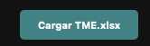
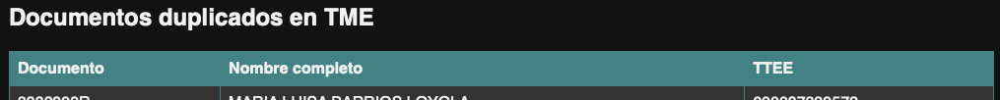
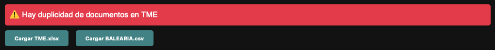
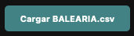
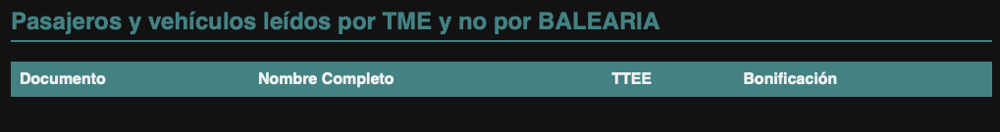
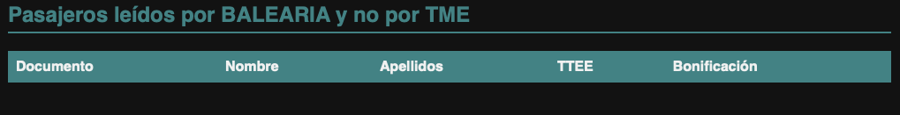
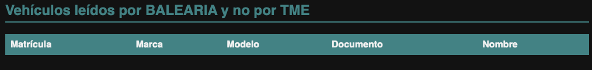

Esta herramienta permite comparar dos archivos (uno en formato XLSX y otro en formato CSV) para encontrar diferencias específicas entre columnas.
Pasos para usar la aplicación:
Pulsa el botón Carga TME.xlsx para cargar el archivo de TME.

En este paso, se van a mostrar las duplicidades de TME, si las hay, de la siguiente forma:

Se mostrará un aviso rojo para advertirnos:

Pulsa el botón Cargar BALEARIA.csv para cargar el archivo de BALEARIA.

En este paso, se cargará el archivo y se mostrarán los resultados automáticamente:



Puedes guardar los resultados para una futura consulta en formato PDF pulsando el botón Guardar como PDF.
Al finalizar, pulsamos el botón Empezar de nuevo para una nueva comparación de datos.
Activando la casilla Modo oscuro, pasaremos del modo claro al modo oscuro, de esta forma la aplicación será más amigable con el medio ambiente gastando menos energía. Se puede revertir desactivando la misma casilla.
Este es un vídeo explicativo del uso de la aplicación:
Casos particulares
Se dan casos en los que dos o más clientes no tienen el número de documento introducido, sobre todo los bebés, en este caso la aplicación nos dará una falsa advertencia de duplicidad ya que el campo del documento se llenará con ceros: "000000000000" y como hay otro o más clientes sin documento introducido, ellos también tendrán el mismo documento: "000000000000", la aplicación interpreta este caso como duplicidad.
Cuando en un embarque tenemos chóferes, éstos no los lee TME a fecha de hoy "22/04/2025" con lo que nos van a aparecer como resultado en los "Pasajeros que tiene BALEARIA y no TME".
Nota: Ten en cuenta los casos particulares mencionados anteriormente para una correcta interpretación de los resultados.